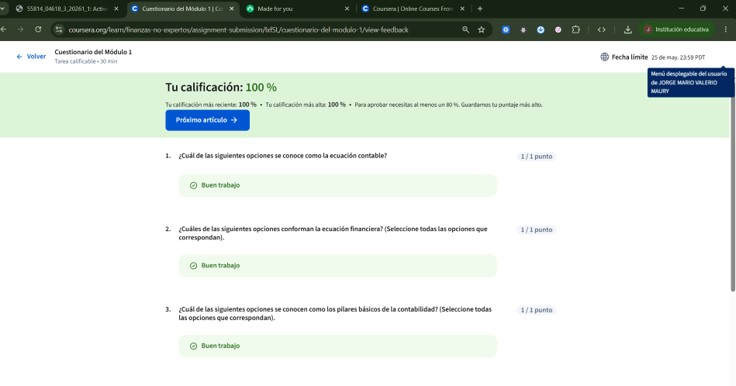
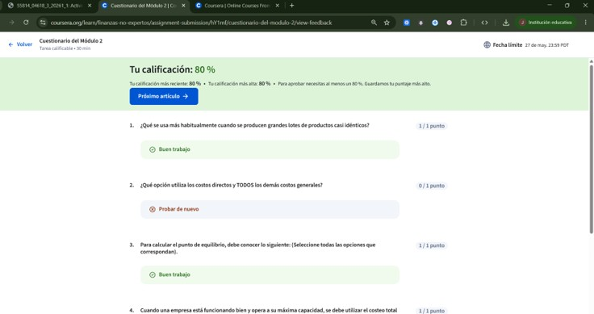
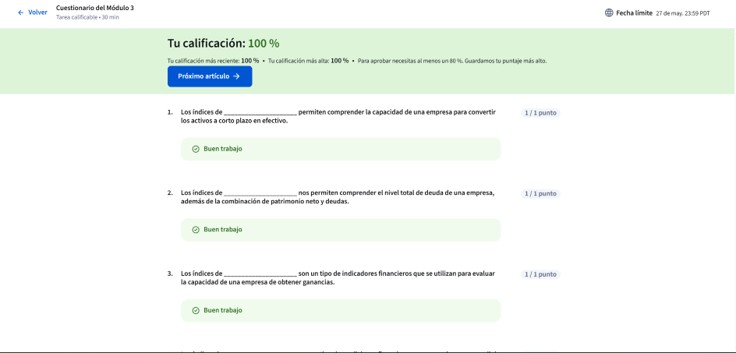
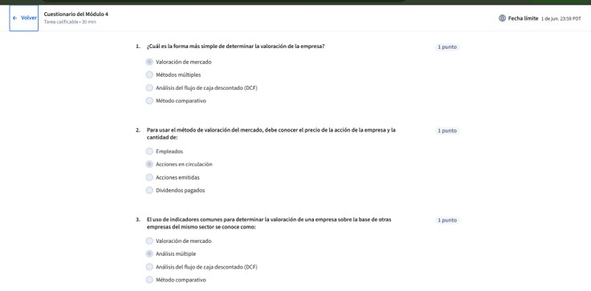
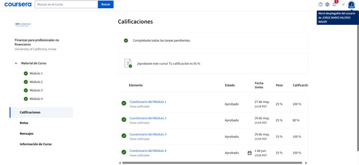

Evidencia de aprendizaje del curso realizado en Coursera y la Universidad de California Irvine.
Este curso me permitió comprender conceptos financieros fundamentales para la toma de decisiones dentro de una organización. Aprendí cómo interpretar información financiera, analizar el desempeño de una empresa y entender la importancia de la planificación financiera para mejorar la rentabilidad.
Aprendí la importancia de las finanzas dentro de una empresa y cómo la información financiera ayuda en la toma de decisiones. También conocí conceptos básicos de contabilidad y principios que garantizan la calidad y confiabilidad de la información financiera.
Aprendí a identificar costos fijos y variables, comprender diferentes métodos de cálculo de costos y utilizar el punto de equilibrio para determinar cuándo una empresa cubre todos sus gastos.
Aprendí a evaluar el desempeño financiero de una empresa mediante indicadores de liquidez, rentabilidad y endeudamiento. También conocí herramientas que permiten analizar fortalezas y oportunidades de mejora.
Aprendí a evaluar inversiones y empresas utilizando información financiera para apoyar decisiones estratégicas. Comprendí la relación entre riesgo, rentabilidad y valor.
Este curso fortaleció mis conocimientos sobre finanzas y me permitió comprender cómo las decisiones financieras influyen en el crecimiento y sostenibilidad de una organización. Gracias a estos aprendizajes, ahora puedo interpretar información financiera, analizar indicadores y participar de manera más informada en la toma de decisiones empresariales.
A continuación se presentan las evidencias obtenidas durante el desarrollo del curso.

Evidencia correspondiente al Módulo 1.

Evidencia correspondiente al Módulo 2.

Evidencia correspondiente al Módulo 3.

Evidencia correspondiente al Módulo 4.

Resultado final.